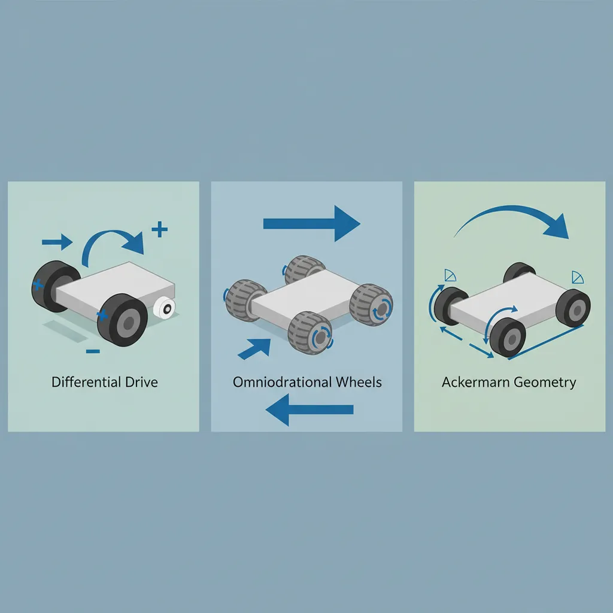
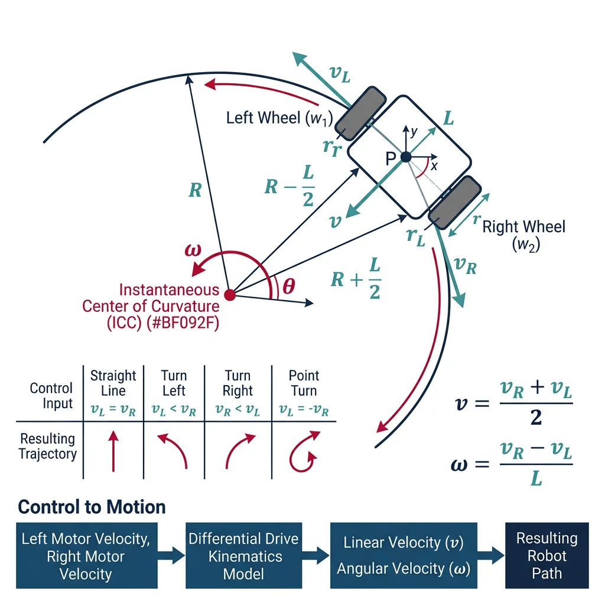
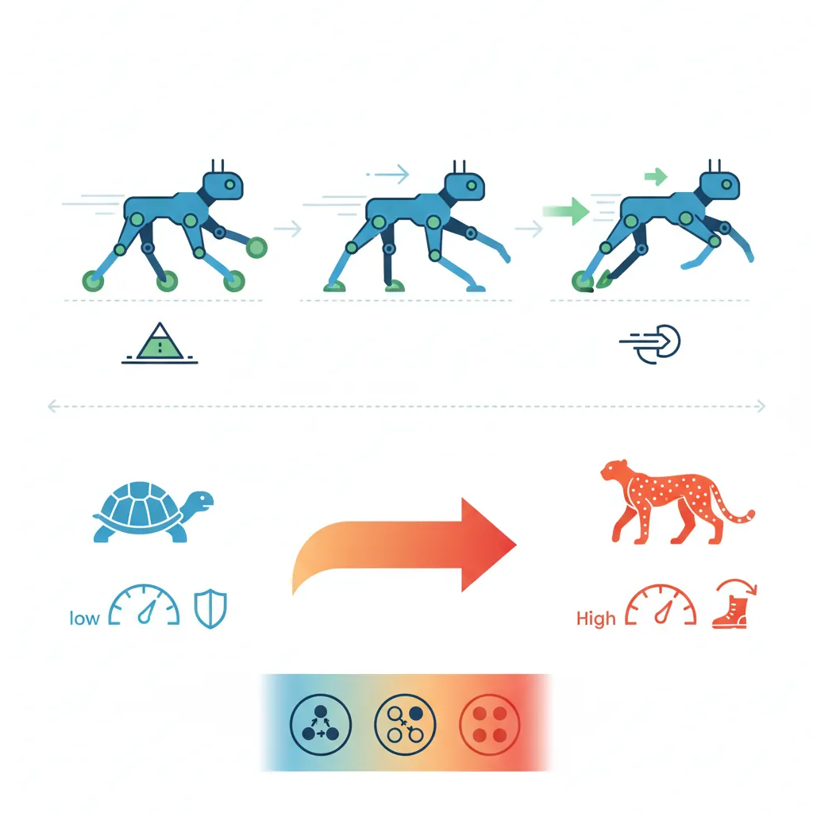
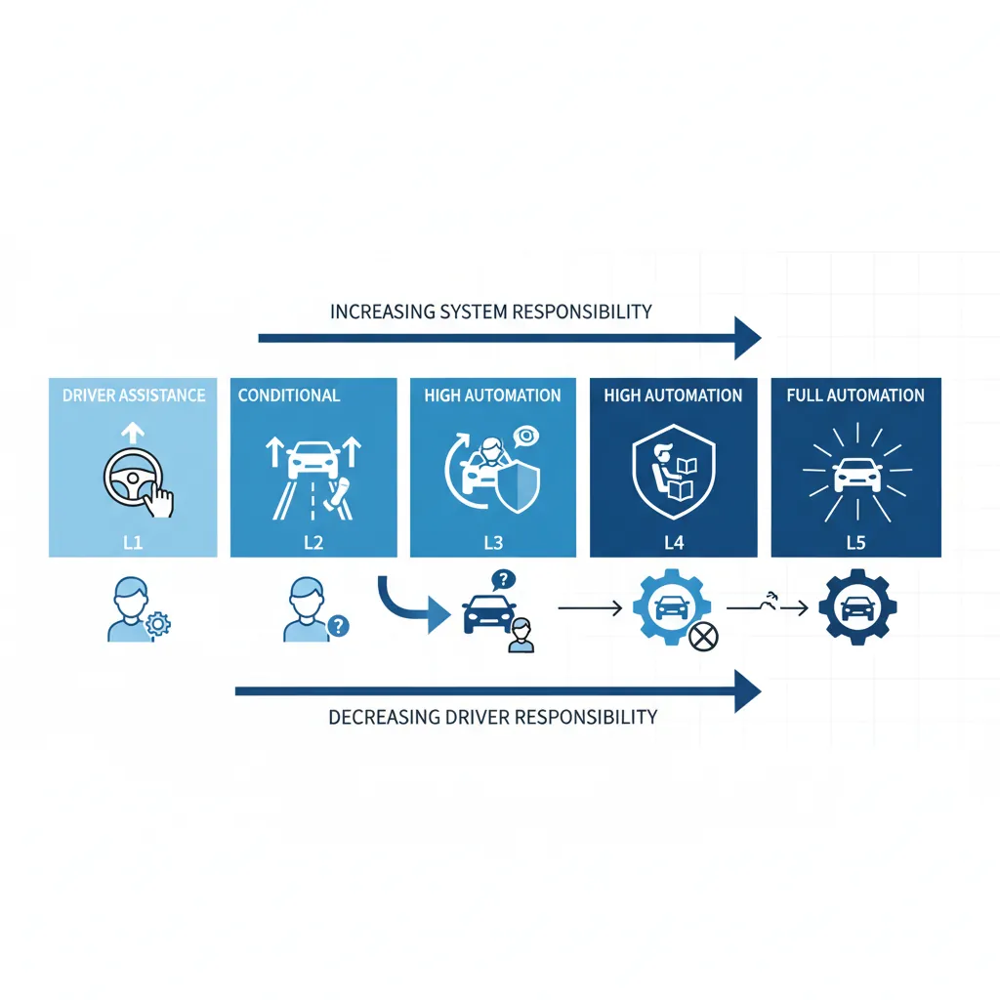
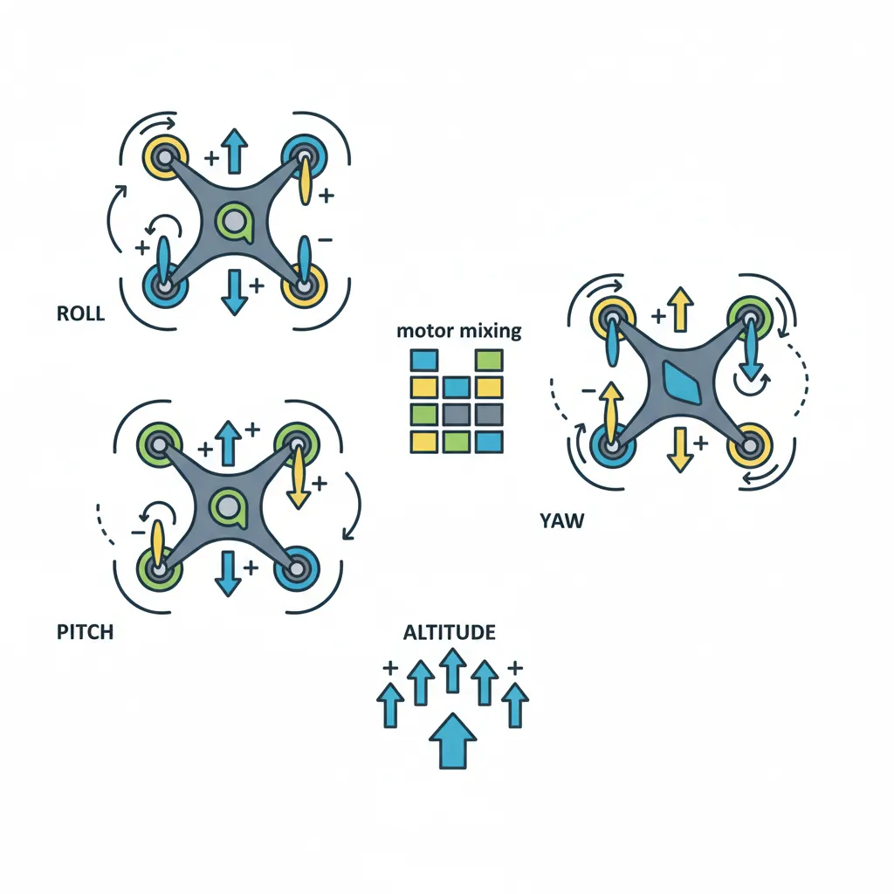

Wheeled Robots
Robotics & Automation Mastery
Introduction to Robotics
History, types, DOF, architectures, mechatronics, ethicsSensors & Perception Systems
Encoders, IMUs, LiDAR, cameras, sensor fusion, Kalman filters, SLAMActuators & Motion Control
DC/servo/stepper motors, hydraulics, drivers, gear systemsKinematics (Forward & Inverse)
DH parameters, transformations, Jacobians, workspace analysisDynamics & Robot Modeling
Newton-Euler, Lagrangian, inertia, friction, contact modelingControl Systems & PID
PID tuning, state-space, LQR, MPC, adaptive & robust controlEmbedded Systems & Microcontrollers
Arduino, STM32, RTOS, PWM, serial protocols, FPGARobot Operating Systems (ROS)
ROS2, nodes, topics, Gazebo, URDF, navigation stacksComputer Vision for Robotics
Calibration, stereo vision, object recognition, visual SLAMAI Integration & Autonomous Systems
ML, reinforcement learning, path planning, swarm roboticsHuman-Robot Interaction (HRI)
Cobots, gesture/voice control, safety standards, social roboticsIndustrial Robotics & Automation
PLC, SCADA, Industry 4.0, smart factories, digital twinsMobile Robotics
Wheeled/legged robots, autonomous vehicles, drones, marine roboticsSafety, Reliability & Compliance
Functional safety, redundancy, ISO standards, cybersecurityAdvanced & Emerging Robotics
Soft robotics, bio-inspired, surgical, space, nano-roboticsSystems Integration & Deployment
HW/SW co-design, testing, field deployment, lifecycleRobotics Business & Strategy
Startups, product-market fit, manufacturing, go-to-marketComplete Robotics System Project
Autonomous rover, pick-and-place arm, delivery robot, swarm simMobile robots must solve a fundamental problem that fixed industrial robots never face: where am I, and how do I get there? The answer depends on the locomotion system. Wheels are efficient on flat surfaces, legs handle rough terrain, and each configuration has unique kinematic constraints.

The differential drive is the most common mobile robot configuration. Two drive wheels with independent motors produce motion and steering through speed differences. The kinematics are elegantly simple:

import math
class DifferentialDriveRobot:
"""Differential drive mobile robot kinematics"""
def __init__(self, wheel_radius, wheel_base):
self.R = wheel_radius # meters
self.L = wheel_base # distance between wheels (meters)
self.x = 0.0 # position x (meters)
self.y = 0.0 # position y (meters)
self.theta = 0.0 # heading (radians)
self.path = [(0, 0)]
def forward_kinematics(self, omega_left, omega_right, dt):
"""
Given wheel angular velocities (rad/s), compute new pose.
v = R * (ωR + ωL) / 2 — linear velocity
ω = R * (ωR - ωL) / L — angular velocity
"""
v_left = self.R * omega_left
v_right = self.R * omega_right
v = (v_right + v_left) / 2.0 # linear velocity
omega = (v_right - v_left) / self.L # angular velocity
# Update pose using ICC (Instantaneous Center of Curvature)
if abs(omega) < 1e-6: # Straight line
self.x += v * math.cos(self.theta) * dt
self.y += v * math.sin(self.theta) * dt
else:
# Arc motion
r = v / omega # turning radius
self.x += r * (math.sin(self.theta + omega * dt) - math.sin(self.theta))
self.y -= r * (math.cos(self.theta + omega * dt) - math.cos(self.theta))
self.theta += omega * dt
self.theta = self.theta % (2 * math.pi)
self.path.append((round(self.x, 3), round(self.y, 3)))
return {'x': round(self.x, 3), 'y': round(self.y, 3),
'theta_deg': round(math.degrees(self.theta), 1),
'v': round(v, 3), 'omega': round(omega, 3)}
def inverse_kinematics(self, v_desired, omega_desired):
"""Given desired v and ω, compute wheel speeds"""
v_right = v_desired + (omega_desired * self.L / 2)
v_left = v_desired - (omega_desired * self.L / 2)
omega_right = v_right / self.R
omega_left = v_left / self.R
return {'omega_left': round(omega_left, 3),
'omega_right': round(omega_right, 3)}
# Create robot: 5cm wheel radius, 30cm wheelbase
robot = DifferentialDriveRobot(wheel_radius=0.05, wheel_base=0.30)
# Drive forward for 2 seconds (both wheels same speed)
print("=== Differential Drive Simulation ===\n")
print("Stage 1: Drive straight (2s)")
for t in range(20):
pose = robot.forward_kinematics(omega_left=10, omega_right=10, dt=0.1)
print(f" Position: ({pose['x']}, {pose['y']}) m, Heading: {pose['theta_deg']}°")
# Turn right (left wheel faster)
print("\nStage 2: Turn right (1s)")
for t in range(10):
pose = robot.forward_kinematics(omega_left=10, omega_right=5, dt=0.1)
print(f" Position: ({pose['x']}, {pose['y']}) m, Heading: {pose['theta_deg']}°")
# Inverse kinematics: what wheel speeds for v=0.5 m/s, ω=1 rad/s?
ik = robot.inverse_kinematics(v_desired=0.5, omega_desired=1.0)
print(f"\nInverse Kinematics (v=0.5 m/s, ω=1.0 rad/s):")
print(f" Left wheel: {ik['omega_left']} rad/s, Right wheel: {ik['omega_right']} rad/s")
Ackermann Steering
Ackermann steering is the geometry used in cars and car-like robots. The inner wheel turns more sharply than the outer wheel, ensuring both wheels trace concentric circles around the same turn center — preventing tire scrubbing.
import math
class AckermannRobot:
"""Car-like robot with Ackermann steering geometry"""
def __init__(self, wheelbase, track_width):
self.L = wheelbase # front-to-rear axle distance
self.T = track_width # distance between left-right wheels
self.x = 0.0
self.y = 0.0
self.theta = 0.0 # heading
self.max_steer = math.radians(35) # max steering angle
def compute_steering(self, desired_radius):
"""
Ackermann geometry: compute inner and outer wheel angles
for a desired turning radius.
"""
if abs(desired_radius) < self.L:
print(" Warning: Turning radius too small!")
desired_radius = self.L * 1.5
# Average steering angle
delta_avg = math.atan(self.L / desired_radius)
# Inner and outer wheel angles (Ackermann correction)
delta_inner = math.atan(self.L / (desired_radius - self.T / 2))
delta_outer = math.atan(self.L / (desired_radius + self.T / 2))
return {
'avg_angle_deg': round(math.degrees(delta_avg), 1),
'inner_angle_deg': round(math.degrees(delta_inner), 1),
'outer_angle_deg': round(math.degrees(delta_outer), 1),
'turn_radius': round(desired_radius, 2)
}
def bicycle_model_update(self, speed, steering_angle, dt):
"""Simplified bicycle model for motion prediction"""
steering_angle = max(-self.max_steer, min(self.max_steer, steering_angle))
self.x += speed * math.cos(self.theta) * dt
self.y += speed * math.sin(self.theta) * dt
self.theta += (speed / self.L) * math.tan(steering_angle) * dt
return {'x': round(self.x, 3), 'y': round(self.y, 3),
'theta_deg': round(math.degrees(self.theta), 1)}
# Create car-like robot (wheelbase=2.5m, track=1.5m)
car = AckermannRobot(wheelbase=2.5, track_width=1.5)
# Compute steering for different turning radii
print("=== Ackermann Steering Geometry ===\n")
for radius in [5, 10, 20, 50]:
result = car.compute_steering(radius)
print(f"Radius {radius}m: Inner={result['inner_angle_deg']}°, "
f"Outer={result['outer_angle_deg']}°, Avg={result['avg_angle_deg']}°")
# Simulate driving in a curve
print("\n=== Bicycle Model Simulation ===")
car2 = AckermannRobot(wheelbase=2.5, track_width=1.5)
steer = math.radians(15) # 15° steering
for t in range(10):
pose = car2.bicycle_model_update(speed=5.0, steering_angle=steer, dt=0.5)
if t % 3 == 0:
print(f" t={t*0.5:.1f}s: ({pose['x']}, {pose['y']}) heading={pose['theta_deg']}°")
Holonomic & Omnidirectional Platforms
A holonomic robot can move in any direction at any time without needing to turn first. This requires special wheels — either Mecanum wheels (angled rollers at 45°) or omni wheels (perpendicular rollers). Holonomic platforms are ideal for warehouses, where robots need to navigate tight aisles.
Locomotion Comparison
| Type | DOF | Terrain | Maneuverability | Example |
|---|---|---|---|---|
| Differential Drive | 2 (v, ω) | Flat/indoor | Good (spin in place) | iRobot Roomba, TurtleBot |
| Ackermann | 2 (v, δ) | Roads/outdoor | Low (min turn radius) | Cars, Waymo, GPS tractors |
| Mecanum (4-wheel) | 3 (vx, vy, ω) | Flat/indoor | Excellent (strafe) | KUKA KMP, warehouse AGVs |
| Tracked | 2 (v, ω) | Rough/outdoor | Medium | Bomb disposal, mining |
| Quadruped | 12+ joints | Any terrain | Very high | Boston Dynamics Spot |
| Bipedal | 6+ per leg | Human spaces | High (stairs) | Atlas, Digit, Optimus |
import math
class MecanumRobot:
"""4-wheel Mecanum drive (holonomic platform)"""
def __init__(self, wheel_radius, lx, ly):
self.R = wheel_radius # wheel radius
self.lx = lx # half-distance between front/rear axles
self.ly = ly # half-distance between left/right wheels
self.x = 0.0
self.y = 0.0
self.theta = 0.0
def inverse_kinematics(self, vx, vy, omega):
"""
Compute individual wheel speeds from desired body velocity.
Mecanum inverse kinematics (45° roller angle):
ω1 = (vx - vy - (lx+ly)ω) / R (front-left)
ω2 = (vx + vy + (lx+ly)ω) / R (front-right)
ω3 = (vx + vy - (lx+ly)ω) / R (rear-left)
ω4 = (vx - vy + (lx+ly)ω) / R (rear-right)
"""
k = self.lx + self.ly
w1 = (vx - vy - k * omega) / self.R # Front-Left
w2 = (vx + vy + k * omega) / self.R # Front-Right
w3 = (vx + vy - k * omega) / self.R # Rear-Left
w4 = (vx - vy + k * omega) / self.R # Rear-Right
return [round(w, 2) for w in [w1, w2, w3, w4]]
def update(self, vx, vy, omega, dt):
"""Update pose from body-frame velocities"""
# Transform body velocities to world frame
cos_t = math.cos(self.theta)
sin_t = math.sin(self.theta)
self.x += (vx * cos_t - vy * sin_t) * dt
self.y += (vx * sin_t + vy * cos_t) * dt
self.theta += omega * dt
return {'x': round(self.x, 3), 'y': round(self.y, 3),
'theta_deg': round(math.degrees(self.theta), 1)}
# Create Mecanum robot
mec = MecanumRobot(wheel_radius=0.05, lx=0.15, ly=0.20)
# Movement commands
print("=== Mecanum Drive: Omnidirectional Motion ===\n")
commands = [
('Forward', 0.5, 0.0, 0.0),
('Strafe Right', 0.0, 0.5, 0.0),
('Diagonal', 0.5, 0.5, 0.0),
('Spin in place', 0.0, 0.0, 1.0),
('Forward+Turn', 0.5, 0.0, 0.5),
]
for name, vx, vy, omega in commands:
wheels = mec.inverse_kinematics(vx, vy, omega)
print(f"{name:15s} (vx={vx}, vy={vy}, ω={omega})")
print(f" Wheels [FL, FR, RL, RR]: {wheels} rad/s\n")
Legged Robots
Legged robots sacrifice the efficiency of wheels for the versatility of legs. They can step over obstacles, climb stairs, traverse rubble, and navigate terrain that would immobilize any wheeled platform. The trade-off is dramatically increased mechanical and computational complexity.

Quadruped Robots
Quadruped robots like Boston Dynamics' Spot have become commercially viable for inspection, construction monitoring, and hazardous environments. Their stability comes from having up to three support points at any time.
import math
class QuadrupedGait:
"""Quadruped gait pattern generator"""
# Standard gait patterns (phase offsets for each leg)
GAITS = {
'walk': {
'description': 'Slow, statically stable — 3 legs always grounded',
'phases': [0.0, 0.5, 0.75, 0.25], # FL, FR, RL, RR
'duty_factor': 0.75, # % of cycle each foot is on ground
'speed': 'slow'
},
'trot': {
'description': 'Diagonal pairs move together — fastest stable gait',
'phases': [0.0, 0.5, 0.5, 0.0],
'duty_factor': 0.5,
'speed': 'medium'
},
'pace': {
'description': 'Same-side pairs move together — lateral rocking',
'phases': [0.0, 0.5, 0.0, 0.5],
'duty_factor': 0.5,
'speed': 'medium'
},
'gallop': {
'description': 'All legs different phase — fastest but dynamically unstable',
'phases': [0.0, 0.1, 0.5, 0.6],
'duty_factor': 0.3,
'speed': 'fast'
}
}
def __init__(self):
self.leg_names = ['Front-Left', 'Front-Right', 'Rear-Left', 'Rear-Right']
def generate_gait(self, gait_name, num_steps=8):
"""Generate gait timing diagram"""
gait = self.GAITS[gait_name]
print(f"\nGait: {gait_name.upper()} — {gait['description']}")
print(f"Duty Factor: {gait['duty_factor']*100:.0f}% | Speed: {gait['speed']}")
print(f"\nTiming Diagram (█=stance/ground, ░=swing/air):")
for i, leg in enumerate(self.leg_names):
phase = gait['phases'][i]
duty = gait['duty_factor']
# Generate timing pattern
pattern = ''
for step in range(num_steps * 4):
t = (step / (num_steps * 4) + phase) % 1.0
if t < duty:
pattern += '█'
else:
pattern += '░'
print(f" {leg:12s} |{pattern}|")
# Calculate stability
support_count = []
for step in range(num_steps * 4):
legs_on_ground = 0
for i in range(4):
t = (step / (num_steps * 4) + gait['phases'][i]) % 1.0
if t < gait['duty_factor']:
legs_on_ground += 1
support_count.append(legs_on_ground)
min_support = min(support_count)
stability = 'Static' if min_support >= 3 else 'Dynamic'
print(f"\n Min support legs: {min_support} → {stability} stability")
# Demonstrate all gaits
planner = QuadrupedGait()
for gait in ['walk', 'trot', 'pace', 'gallop']:
planner.generate_gait(gait)
Case Study: Boston Dynamics Spot
Spot by Boston Dynamics is the first commercially successful quadruped robot. Key specifications and real-world deployments:
- Specs: 12 DOF (3 per leg), 14 kg payload, 5.2 km/h top speed, 90-minute battery, IP54 ingress protection
- Perception: 5 stereo cameras (360° vision), IMU, joint encoders — can climb 30° slopes and navigate stairs
- Applications: Nuclear facility inspection (Sellafield, UK), construction progress monitoring (Pomerleau), oil rig inspection (BP Aker), Mars analog research (NASA JPL)
- SDK: Python/gRPC API allows custom autonomy behaviors, waypoint navigation, and third-party sensor integration
Key Lesson: Spot succeeded commercially because Boston Dynamics built a platform, not a product. The robot's value comes from the ecosystem of payloads and applications built on top.
Gait Planning & Stability
Gait planning determines when each foot lifts and lands, while footstep planning determines where feet are placed. The key constraint is maintaining the Zero Moment Point (ZMP) within the support polygon — the convex hull of all ground contact points.
Autonomous Vehicles
Autonomous vehicles (AVs) are the highest-profile application of mobile robotics. The SAE J3016 standard defines six levels of driving automation:

SAE Automation Levels
| Level | Name | Driving Task | Example |
|---|---|---|---|
| L0 | No Automation | Human does everything | Classic cars |
| L1 | Driver Assistance | Steering OR acceleration assist | Adaptive cruise control |
| L2 | Partial Automation | Steering AND acceleration assist | Tesla Autopilot, GM Super Cruise |
| L3 | Conditional Automation | System drives in specific conditions | Mercedes Drive Pilot (highway) |
| L4 | High Automation | System drives in geo-fenced area | Waymo, Cruise (urban robotaxi) |
| L5 | Full Automation | System drives everywhere | Not yet achieved |
Sensor Suites
Autonomous vehicles fuse multiple sensor modalities because no single sensor is sufficient for all conditions. The industry debate between camera-only (Tesla's approach) and LiDAR + camera fusion (Waymo, Cruise) remains unresolved.
AV Sensor Comparison
| Sensor | Range | Resolution | Weather | Cost | 3D Info |
|---|---|---|---|---|---|
| Camera | 200m+ | Very high | Poor (rain/glare) | $50-200 | Inferred (mono) / Stereo |
| LiDAR | 200m+ | High (128 ch) | Moderate | $500-10K | Direct point cloud |
| Radar | 300m+ | Low | Excellent | $100-500 | Range + velocity |
| Ultrasonic | 5m | Very low | Good | $5-20 | Range only |
Localization & HD Mapping
Localization answers "where am I?" with centimeter accuracy. AVs combine GPS (which alone is only accurate to 1-2 meters) with HD maps, LiDAR matching, visual odometry, and IMU dead-reckoning for robust positioning.
import math
import random
class ParticleFilterLocalizer:
"""Monte Carlo Localization (particle filter) for mobile robots"""
def __init__(self, num_particles, map_bounds):
self.num_particles = num_particles
self.map_bounds = map_bounds # (x_min, x_max, y_min, y_max)
# Initialize particles uniformly
self.particles = []
for _ in range(num_particles):
p = {
'x': random.uniform(map_bounds[0], map_bounds[1]),
'y': random.uniform(map_bounds[2], map_bounds[3]),
'theta': random.uniform(0, 2 * math.pi),
'weight': 1.0 / num_particles
}
self.particles.append(p)
def predict(self, v, omega, dt, noise_v=0.1, noise_omega=0.05):
"""Motion model: move particles forward with noise"""
for p in self.particles:
v_noisy = v + random.gauss(0, noise_v)
omega_noisy = omega + random.gauss(0, noise_omega)
p['x'] += v_noisy * math.cos(p['theta']) * dt
p['y'] += v_noisy * math.sin(p['theta']) * dt
p['theta'] += omega_noisy * dt
def update(self, measurement, landmarks):
"""
Sensor model: weight particles based on how well they
explain the observed distances to landmarks.
"""
for p in self.particles:
weight = 1.0
for i, (lx, ly) in enumerate(landmarks):
expected_dist = math.hypot(lx - p['x'], ly - p['y'])
observed_dist = measurement[i]
# Gaussian likelihood
sigma = 0.5 # sensor noise (meters)
diff = expected_dist - observed_dist
likelihood = math.exp(-0.5 * (diff / sigma) ** 2)
weight *= max(likelihood, 1e-10)
p['weight'] = weight
# Normalize weights
total = sum(p['weight'] for p in self.particles)
for p in self.particles:
p['weight'] /= total
def resample(self):
"""Low-variance resampling"""
new_particles = []
r = random.uniform(0, 1.0 / self.num_particles)
c = self.particles[0]['weight']
i = 0
for m in range(self.num_particles):
u = r + m / self.num_particles
while c < u:
i += 1
c += self.particles[i]['weight']
new_p = dict(self.particles[i])
new_p['weight'] = 1.0 / self.num_particles
new_particles.append(new_p)
self.particles = new_particles
def estimate(self):
"""Weighted average of particles = best pose estimate"""
x = sum(p['x'] * p['weight'] for p in self.particles)
y = sum(p['y'] * p['weight'] for p in self.particles)
sin_t = sum(math.sin(p['theta']) * p['weight'] for p in self.particles)
cos_t = sum(math.cos(p['theta']) * p['weight'] for p in self.particles)
theta = math.atan2(sin_t, cos_t)
return {'x': round(x, 2), 'y': round(y, 2),
'theta_deg': round(math.degrees(theta), 1)}
# Simulate particle filter localization
landmarks = [(0, 10), (10, 0), (10, 10), (5, 5)] # Known landmark positions
true_pos = {'x': 3.0, 'y': 4.0, 'theta': 0.5}
# Create localizer with 500 particles in 15x15 map
localizer = ParticleFilterLocalizer(500, (0, 15, 0, 15))
# Simulate range measurements from true position to landmarks
measurements = [math.hypot(lx - true_pos['x'], ly - true_pos['y']) + random.gauss(0, 0.3)
for lx, ly in landmarks]
print("=== Particle Filter Localization ===\n")
print(f"True Position: ({true_pos['x']}, {true_pos['y']})")
print(f"Landmarks: {landmarks}")
print(f"Range Measurements: {[round(m, 2) for m in measurements]}\n")
# Run prediction → update → resample cycle
for iteration in range(5):
localizer.predict(v=0.5, omega=0.1, dt=0.1)
localizer.update(measurements, landmarks)
localizer.resample()
est = localizer.estimate()
error = math.hypot(est['x'] - true_pos['x'], est['y'] - true_pos['y'])
print(f"Iteration {iteration+1}: est=({est['x']}, {est['y']}), error={error:.2f}m")
Drones & Maritime Robotics
Unmanned Aerial Vehicles (UAVs) have transformed industries from agriculture to cinematography. Multirotor drones achieve flight through differential thrust — varying the speed of 4+ propellers to control roll, pitch, yaw, and altitude. Fixed-wing drones trade hovering capability for endurance and speed.

import math
class QuadcopterDynamics:
"""Simplified quadcopter flight dynamics model"""
def __init__(self, mass_kg, arm_length_m):
self.mass = mass_kg
self.arm = arm_length_m
self.g = 9.81 # gravity
self.hover_thrust = mass_kg * self.g # total thrust to hover
# State: position, velocity, attitude
self.z = 0.0 # altitude (m)
self.vz = 0.0 # vertical velocity (m/s)
self.roll = 0.0 # roll angle (rad)
self.pitch = 0.0 # pitch angle (rad)
self.yaw = 0.0 # yaw angle (rad)
def motor_mixing(self, throttle, roll_cmd, pitch_cmd, yaw_cmd):
"""
Convert pilot commands to individual motor speeds.
Quadcopter X configuration:
M1 (front-left, CCW) M2 (front-right, CW)
M3 (rear-left, CW) M4 (rear-right, CCW)
"""
m1 = throttle + roll_cmd + pitch_cmd - yaw_cmd
m2 = throttle - roll_cmd + pitch_cmd + yaw_cmd
m3 = throttle + roll_cmd - pitch_cmd + yaw_cmd
m4 = throttle - roll_cmd - pitch_cmd - yaw_cmd
# Clamp to [0, 1]
motors = [max(0, min(1, m)) for m in [m1, m2, m3, m4]]
return motors
def update(self, motors, dt):
"""Simple altitude dynamics"""
total_thrust = sum(motors) * self.hover_thrust / 2.0
net_force = total_thrust - self.mass * self.g
az = net_force / self.mass
self.vz += az * dt
self.z += self.vz * dt
self.z = max(0, self.z) # ground constraint
return {
'altitude': round(self.z, 2),
'vz': round(self.vz, 2),
'motors': [round(m, 3) for m in motors]
}
# Create quadcopter (1.5kg, 25cm arm)
quad = QuadcopterDynamics(mass_kg=1.5, arm_length_m=0.25)
print("=== Quadcopter Motor Mixing ===\n")
commands = [
('Hover', 0.5, 0.0, 0.0, 0.0),
('Climb', 0.7, 0.0, 0.0, 0.0),
('Roll Right', 0.5, -0.1, 0.0, 0.0),
('Pitch Fwd', 0.5, 0.0, 0.1, 0.0),
('Yaw CW', 0.5, 0.0, 0.0, 0.1),
]
for name, throttle, roll, pitch, yaw in commands:
motors = quad.motor_mixing(throttle, roll, pitch, yaw)
print(f"{name:12s}: Motors [M1={motors[0]:.2f}, M2={motors[1]:.2f}, "
f"M3={motors[2]:.2f}, M4={motors[3]:.2f}]")
# Simulate takeoff
print("\n=== Takeoff Simulation ===")
quad2 = QuadcopterDynamics(mass_kg=1.5, arm_length_m=0.25)
for t in range(20):
throttle = 0.65 if t < 10 else 0.50 # climb then hover
motors = quad2.motor_mixing(throttle, 0, 0, 0)
state = quad2.update(motors, dt=0.1)
if t % 4 == 0:
print(f" t={t*0.1:.1f}s: alt={state['altitude']}m, vz={state['vz']}m/s")
Marine & Underwater Robotics
Autonomous Underwater Vehicles (AUVs) and Remotely Operated Vehicles (ROVs) face unique challenges: GPS doesn't work underwater (radio waves barely penetrate water), pressure increases ~1 atmosphere per 10 meters, and saltwater corrodes electronics. Navigation relies on acoustic transponders, inertial navigation, and Doppler velocity logs.
Underwater Robotics Comparison
| Type | Tethered | Depth | Duration | Use Case |
|---|---|---|---|---|
| ROV | Yes (power + data) | 6,000m+ | Days (powered from ship) | Deep-sea inspection, oil & gas |
| AUV | No (battery) | 6,000m | Hours (10-24h typical) | Seafloor mapping, mine hunting |
| Glider | No (buoyancy) | 1,000m | Months (low energy) | Ocean monitoring, climate data |
| ASV | No (surface) | Surface only | Days-weeks (solar) | Bathymetry, environmental monitoring |
Case Study: Ocean Infinity's Armada Fleet
Ocean Infinity operates the world's largest fleet of marine robots — autonomous surface vessels (ASVs) and AUVs that conduct offshore surveys with minimal crew. Their Armada fleet uses:
- Uncrewed Surface Vessels (USVs): 78m ships that can operate fully autonomously or be remotely piloted from shore control centers
- AUV Swarms: Multiple AUVs deployed from USVs simultaneously to map the seafloor — covering more area in one expedition than traditional ships cover in months
- Impact: Reduced COâ'' emissions by 90% vs. conventional survey vessels, while dramatically reducing human risk at sea
Field Deployment Strategies
Deploying mobile robots in the real world requires solving problems that don't exist in the lab: GPS denial (indoors, urban canyons), dynamic obstacles (pedestrians, vehicles), weather (rain, fog, dust), and communication loss (network dead zones).
Mobile Robot Planner Tool
Use this tool to design a mobile robot platform — document your locomotion type, sensor suite, navigation strategy, and deployment environment, then download the design as Word, Excel, or PDF.
Mobile Robot Design Planner
Document your mobile robot design. Download as Word, Excel, or PDF.
All data stays in your browser. Nothing is sent to or stored on any server.
Exercises & Challenges
Exercise 1: Pure Pursuit Controller
Implement a pure pursuit path-following controller for the DifferentialDriveRobot. Given a list of waypoints, the controller should: (1) find the lookahead point on the path, (2) compute the steering arc to that point, (3) output left/right wheel velocities. Test with a figure-8 path.
Exercise 2: Multi-Robot Coordination
Create a fleet management system for 3 MecanumRobot instances in a warehouse. Implement: (1) centralized task assignment (which robot picks which order?), (2) collision avoidance (robots must maintain 1m separation), (3) traffic management at aisle intersections (priority queuing). Simulate 10 delivery tasks.
Exercise 3: Quadcopter PID Altitude Controller
Add a PID controller to the QuadcopterDynamics class that maintains a target altitude. The controller should output throttle commands to reach and hold a target altitude of 5 meters. Plot the altitude response over time. Tune Kp, Ki, Kd to minimize overshoot and settling time.
Conclusion & Next Steps
Mobile robotics unlocks the full potential of autonomous systems — taking robots beyond fixed installations into the dynamic, unstructured real world. You've explored wheeled locomotion from differential drive to holonomic Mecanum platforms, legged robots with quadruped gait planning and stability analysis, autonomous vehicles with sensor fusion and particle filter localization, and aerial and marine robots that extend robotics into sky and sea.
The common thread across all mobile platforms is the sense-plan-act loop: perceive the environment (sensors + localization), plan a path (navigation), and execute motion (locomotion control). Mastering these fundamentals prepares you for any mobile robotics domain.